Business Rankings
- Ranked No.6 in LMD Ranking of Leading Listed Companies
- Ranked No.8 in LMD Most Valuable Ranking
- Ranked No.10 in Business Today's Top Twenty Five
Report Parameters
Sri Lanka Telecom presents its sustainability report combining our economic, social and environmental performance in context within this Sustainability Report. Sustainability Reporting is the practice of measuring, disclosing and being accountable to internal and external stakeholders for organisational performance towards sustainable development. This initiative follows 5 years of producing Annual Reports and Sustainability Reports, of which the most recent were for the financial year ended 31st December 2011.
Sri Lanka Telecom adheres to the internationally recognised Global Reporting Initiative Sustainability Reporting Guidelines which is a voluntary standard comprising a set of indicators for economic, environmental and social aspects of business performance that enables stakeholders to compare companies' performance. We have used the G3.1 guidelines and a Compliance Index is provided for easy reference on pages 105 to 109 of this report. Our disclosures have been drawn upto an Application Level B according to the criteria set out in the guidelines.
The Financial Statements for the year ended 31st December 2012 have been audited by KPMG are set out on pages 122 to 188 of this report together with the Accounting Policies and significant assumptions used in the preparation of the financial statements. The environment, social and governance information relates to Sri Lanka Telecom, excluding its subsidiaries and is derived mainly from factual records maintained by the Business Units within the Company using standard measurements and does not require assumptions or complex calculations to be performed in this regard except in the case of Energy Management where the method of computation has been disclosed.
The materiality of the social and environmental issues presented in the Annual Report are determined based on our sustainability model which has been conceptualised giving due consideration to how we engage with our stakeholders and in response to identified needs. In doing so we have also considered the national priorities which are relevant to the industry in which we operate such as targets for digital inclusion. We have considered the severity of impact and the probability of occurrence in assessing the materiality of issues discussed in the report to ensure that our report remains relevant, complete and concise.
Information on Financial Performance, Governance and Risk Management are detailed in separate segments included in this sustainability report and are not duplicated in this segment. The Management Discussion & Analysis preceding the Sustainability Report also contains information relevant to stakeholders including commentary on our economic performance. References to relevant sections of these reports are provided in the GRI Index for the convenience of our readers.
Outlook
We will continue to provide economic, social and environmental information in a single report on an annual basis and plan to add to the number of indicators as our programme of integrating sustainability and business strategy continues.
FOCUSING,
OUR EFFORTS
Sri Lanka Telecom's long standing commitment to sustainability is clearly expressed in our vision, mission and the strategic role that we have played in shaping the country's socio economic prosperity. Superior ICT has the potential to transform the way we function, enabling a low carbon society whilst facilitating economic development by connecting people to opportunity, locally and globally. We support the national ICT vision by partnering Government initiatives aimed at creating an enabling ICT environment to support the country's vision of becoming South Asia's Economic Hub and achieving digital inclusion for all Sri Lankans.
Broadband is a critical infrastructure in the growing global digital economy today and the World Bank has estimated that a 1.21% increase in broadband penetration would yield a 1.21% and 1.38% increase in GDP growth on average for high-income and low/middle-income countries respectively. Sri Lanka has 15% broadband penetration but needs a higher rate of penetration to support the national strategy and the undeniably technology savvy youth. SLT has aligned its strategy to national objectives and has established superior ICT communications and transformed businesses through the deployment of high speed broadband. As the single largest telecommunication company in the country, we are the largest investor towards the economic development of the country and have invested Rs.13.9 billion in 2012 to build telecommunications infrastructure in Sri Lanka for the future requirements. The investment was focused on our NGN, capacity enhancement and fixed network modernisation programme and mobile network expansions and other investments. Projects like i-Sri Lanka require immediate and significant investment, as do network modernisation, increasing broadband capacity and coverage, expansion of fibre aggregation and access networks.
By popularising broadband services in Sri Lanka, SLT aims to boost national GDP, support online education initiatives such as connecting universities (LEARN), connecting schools (SchoolNet), vocational training institutes, National Online Distance Education Service (NODES) and rural ICT centres (Nenasala). We believe that online education can transform communities as we enable access to high quality content in outlying communities that have been underserved in this vital area due to paucity of resources which are typically concentrated in cities.
The success story of Sri Lanka's IT and Business Process Outsourcing sector has been enabled by SLT's superior technology and will be a key beneficiary of our investments made during the year. Growth of this sector has provided the country with 35,000 jobs and US$ 600million in exports and is today the 5th largest export category and one of the fastest growing. Its goal to create 80,000 jobs and US$ 1 billion by 2015 is one that we support, and believe is on the path to achieve it using the infrastructure now in place. We note with satisfaction the efforts of this sector to assist in the regional development plans of the country which are now possible due to the investments made in broadband by SLT. As the lead communications provider to this vital and vibrant growth sector, we are indeed proud to be part of the success story and are committed to working in partnership with the key players to ensure that their business communication needs are met in the future.
Our focus on people has enabled us to serve our customers better through a highly motivated and inspired staff who have responded enthusiastically to programmes launched for their development. The programmes launched in 2012 to embed a customer centric culture into the group has been a key factor in the enhanced performance in the Company and we are committed to maintaining our focus on training and developing our people in the coming years as well. Industrial relations with the numerous trade unions have improved significantly through frequent dialogue and consistent application of HR policies. We have also focused on Health & Safety issues, particularly with employees and have prevention and screening programmes which are delivered through a number of platforms.
This year we embarked on a process of integrating sustainability principles into our core business strategy. This process has been rewarding as we gained a deeper appreciation of many aspects that were already in place and were able to improve other areas in a structured manner. As we progressed, it was evident that many of the sustainability concepts are part of the culture of the organisation such as energy management, equality and diversity and respect for human rights. We look forward to reporting on more areas in the years to come as our information tracking on indicators and policies and procedures are formulated for managing them.
The promise:
To empower the growing IT/BPO sector.The delivery:
The delivery: The Company is at the forefront of supporting the IT/BPO industry as the communication backbone with relevant and reliable communication solutions.In the right direction to facilitate the future generation
We believe that better company performance through the completion of i-Sri Lanka programme and brand building activities will fuel SLT's performance in the CSE.
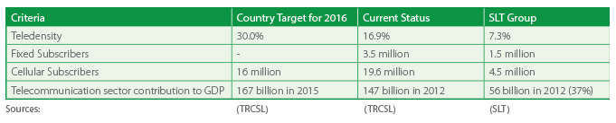Economic Dimension
InvestorsSri Lanka Telecom is one of Sri Lanka's most valuable blue chip companies with an annual Group turnover in excess of Rs.56 billion. We are Sri Lanka's number one integrated communications service provider and the leading broadband and backbone infrastructure services provider in the country. Our market capitalisation on the Colombo Stock Exchange exceeds Rs.80 billion as at 31st December 2012.
Nearly 95% of Company shares were held by two shareholders by the end of year 2012, leaving the balance shares amongst approximately13,000 shareholders including Government institutes, large international institutional investors and small retail investors. The main shareholder at year end was the Government of Sri Lanka which held 49.5% through the Secretary to the Treasury and Global Telecommunication Holdings N.V. of Netherlands, being the second largest shareholder owned a 44.98% stake.
Our share price fluctuated between Rs.34 and Rs.50 during the year indicating volatility driven by various factors such as interest rates, economic conditions, market perceptions etc. We believe that better company performance through the completion of i-Sri Lanka programme and brand building activities will fuel SLT's performance in the CSE.
EconomyOur business strategies are aligned to national priorities of digital inclusion for all Sri Lankans to promote the socio economic development of our country and we have a proud history of over 150 years of empowering the nations' progress. SLT's achievements vis a vis the targets set out in the 10 year Development Plan of the Telecommunications Regulation Commission are given below.
A detailed review of performance is available in the Chairman's Statement, CEO's Review and the Management Discussion sections of this report.
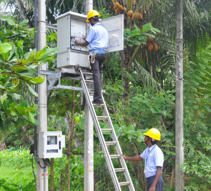MSAN installation under the i-Sri Lanka programme
SLT launched the i-Sri Lanka project in the latter part of 2010 to enhance and upgrade the existing fixed access network, by expanding the fibre network through FTTN (Fibre to the Node) deployment. By reducing the copper cable length, reliability is improved as are quality and broadband data speeds. Fully integrated into the NGN Modernisation Programme, we believe that the growth and strong market share in broadband is evidence that i-Sri Lanka is adding the required foundation for future plans. This will ensure that SLT's quality and range of services remain on par with developed countries, a definite competitive edge in the current context. As discussed under the Management Discussion & Analysis, the i-Sri Lanka programme targets a broadband data speed of up to 20Mbps within a 2 km copper cable length, with a plan to achieve this for more than 90% of our fixed customers by the end 2013. We have also aligned our strategy in line with the national goal of regional expansion and digital inclusion for all Sri Lankans. Our performance in this vital area is necessary for the stability and growth of our country is depicted in the table below.
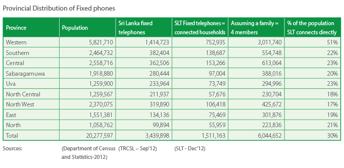
We are the largest communications provider to the corporate sector of the country and provide the technology platforms that are used by many to enhance their productivity and grow their businesses in size and profitability. The ICT/BPO sector which is one of the top 5 revenue earners for the country is powered by SLT and is set to grow as a high value adding industry creating jobs and opportunities for our youth.
Modern banking services powered by state-of-the-art communication solutions
We are committed to supporting the SME growth of the country as well and our ability to grow the SME customer base from 900 in 2010 to 6,000 as at end 2012 bears testimony to our efforts in this direction.
Customer Forums were held in the Central and Southern provinces based on the theme 'Beyond Borders', which saw the participation of a large number of customers in product presentations, a demonstration of SLT products as well as relationship building activities. These and other initiatives are described more fully in the Management Discussion & Analysis section.
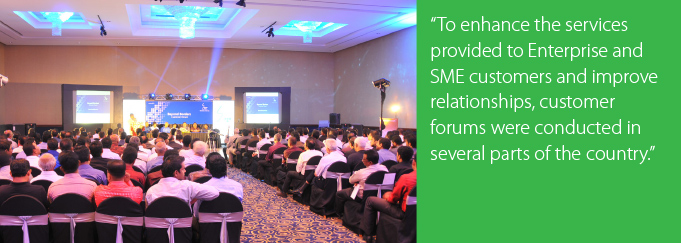 CustomersThe Sri Lanka Telecom Group serves over 6 million customers in Sri Lanka through a plethora of telecommunication products which helps enhance their lifestyle and connects them with opportunity for business and relationships with their loved ones, both globally and locally. We monitor global trends, customer feedback and market research to improve our products and services to ensure that appropriate technology is deployed for the various customer segments in line with their needs and national goals. Our customers include multinational corporations, large and small corporates, public sector, retail and individuals who rely on us to connect with people, opportunity and information. We recognise the need to proactively drive technological innovation to enable Sri Lankans to stay connected to people and opportunity.
We provide facilities and services in the areas of voice, data, video and mobile to customers and offer many value added features to enhance customer experience. It must also be noted that our deployment of next generation products and services has created jobs and enabled a host of online applications such as e-commerce, e-learning, e-governance, telemedicine and so on, which has enhanced capabilities, governance and benefitted millions of citizens.
Our current product portfolio is summarised on page 93, while it is described in greater detail in the Management Discussion & Analysis section.
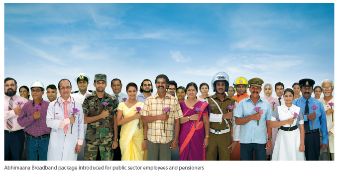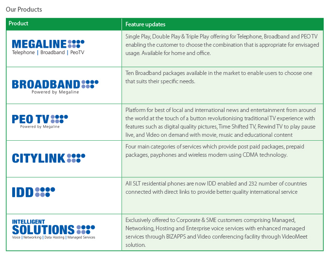
Engaging with our customers
Understanding and delivering the right customer experience has been critical to the retention of customers and expansion of business across the island. The table below summarises how we engaged with our customers and our responses to the challenges identified.
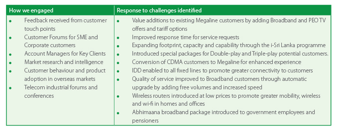
The promise:
To improve Quality and Service FulfillmentThe delivery:
SLT Service Fulfillment Centre has been formed as the interface between relevant customer relationship management teams and service and resource operations teams in order to provide improved serviceThe following activities have been carried out to strengthen the relationship and enhance customer engagement.
- Improvement of Customer Service Centres island-wide in convenient locations and offering a courteous service to customers.
- Appointment of Account Managers and Regional Sales Managers to attend to all communication needs of corporate and SME segments For the consumer end of the market, various forums and events are organised annually at regional level. These events take the form of professional gatherings, mega promotional campaigns, or simple door to door customer visits.
- Conduct educational programmes for school children on communication services.
- Round the clock free access to Contact Centres for customer communication
- Improved total solutions product portfolio and customised solutions to offer better quality and cost effective services to customers
- We operate a contact centre to ensure that we provide additional support for our products and services so that our customers are assured of a high level of service at all times.
The SLT Customer Service Fulfillment process/responsibilities have been formulated to match the supply of services with consistently high levels of quality and reliability to meet promises to consumers and Service Level Agrements (SLAs) to enterprise and wholesale customers. It further aims to keep up with increasing subscriber expectations in today's market and to ensure a "first time right" customer experience. It organises the current business fulfillment processes, applications and information to improve the customer relationship management by improving service and resource management in an organised environment. The fulfillment operational model identifies main business processes and functions required to fulfill the service delivery and clearly demarcates the responsibilities of different operational teams to carry out those functions. The SLT Service Fulfillment Centre has been formed as the interface between relevant customer relationship management teams and service and resource operations teams in order to provide a better end to end service delivery path with a dedicated team located centrally for service fulfillment.
Business Partners
Our progress requires the support of our business partners and how we interact with them forms an important part of our business processes. We work with over 2000 local suppliers and over 125 foreign suppliers each year and have set in place policies and procedures to ensure that there is greater transparency in evaluation of tenders and proposals to strengthen the selection process. All SLT purchases go through a meticulous and competitive tendering process. The current procurement strategy adopted by SLT is the optimum cost method of acceptable quality levels of products and/or services.
e-Tendering systeme-Tender and supplier ranking criteria were key initiatives that were improved this year to streamline our tender process. e-Tendering is aimed at shaping the procurement activities of SLT to a higher degree of efficiency, convenience, information- rich and information sharing. In line with the e-Tender architecture, SLT invites proposals or quotations from suppliers for tenders. Proposals and quotations can be submitted online or offline as specified in the tender documents. This initiative has enabled us to create a paperless system for tenders contributing to lean consumption within the organisation and enhancing productivity. The vendor ranking criteria which include delivery, compliance with specifications, financial considerations, communication, after sales service and other considerations have also improved. This adds greater transparency to the process and captures our experience.
Benefits to SuppliersSLT recognises that our suppliers may be exposed to risks that could substantially impact their profitability and liquidity in the present economic conditions. Therefore we have provided specific concessions to enable them to hedge such risks which include considering prevailing rates at the London Metal Exchange on date of placing order for copper cables and the linking of contract prices to USD rates. Additionally, the benefits received due to healthy long term relationships with suppliers are passed down to customers.
GovernanceSri Lanka Telecom has established Corporate Governance procedures which are described in the Corporate Governance Report. An executive Governance Board (GB) structure was strengthened, in which the Strategic Governance Board (SGB) is accountable for the Board of Directors while all other functional GBs report to SGB. The Governance Secretariat was formed to coordinate all GBs. Each Governance Board has its own Terms of Reference which covers the Mission, Objectives, Members and other guidance notes which are approved by the Governance Secretariat. The new structure is expected to facilitate better project management and efficient resource utilisation.
More information on the corporate governance structure and practices can be found in the Corporate Governance section of this report.
Social Dimension
EmployeesSri Lanka Telecom has one of the country's largest talent pools comprising 6,000 permanent employees who serve islandwide supporting the backbone of the country's telecommunication systems. We recruited 35 new team members in 2012 for new jobs created to meet our strategic business needs contributing to an overall growth in our talent pool in 2012. We have 33 unions which represent the interests of 99.99% of our employees with whom we work together to achieve our strategic goals.
A highly motivated and engaged team with the right skills and attitude is necessary to succeed as a service organisation and our rankings in prestigious business indices, awards and accolades are testimony to the strength of our team at SLT. It is a team that celebrates diversity in geography, gender, race, religion and political views that come together to make a stronger organisation which progresses through respect for each other's values, the best of which are encapsulated in the policies and procedures that are in place for governance of the HR function. There is transparency and consistent application of policies and collective agreements where workers' rights are upheld to a very high standard.
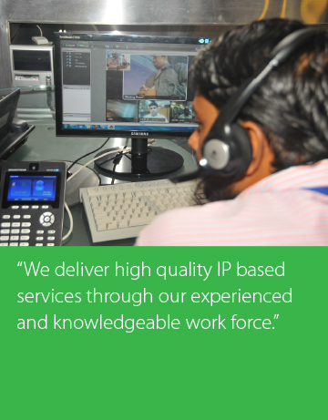Sri Lanka Telecom is an equal opportunity employer adhering to relevant ILO standards, statutory regulations and best practices in HR Management. The principle of equality underlies key HR functions across gender, religion and ethnic origin in an environment where meritocracy prevails in determining career progression, benefits, remuneration and other rewards for performance. Our strong policy framework provides the foundation for an enabling work environment that is ethical and responsible where workers are empowered to function according to their roles. It also provides for a workplace that is free from harassment and discrimination with formal grievance handling and disciplinary procedures in place in case of exceptions. The digital connectivity provided and automated systems enhance the performance of a technically oriented talent pool who are looking to push boundaries in the rapidly evolving communication technology inextricably woven with the prosperity of our country.
Our strong policy framework provides the foundation for an enabling work environment that is ethical and responsible where workers are empowered to function according to their roles.
Improving Employee ExperienceWe continued our Company transformation that began in 2009 with the launch of our brand identity "One Country, One Voice" in 2011. This builds on the strong platform of HR practices already in operation to ensure that our talent pool is actively engaged in pursuance of corporate objectives. Performance related pay for executives, annual performance reviews, codes of conduct, international best practices and collective bargaining through trade unions are all interwoven in to the rich tapestry of corporate culture at SLT.
Award schemes were continued to inspire and motivate staff and to recognise their efforts in driving the performance of the Company. Accordingly, the 'Star Awards' were held for the SLT Contact Centre staff and 'Sales Excellence Awards' were held for the Sales Staff. Also the 'Collection Awards' and 'Service Excellence Awards' were held for billing & collection, service delivery teams respectively, to recognised best and performance among staff. We are encouraged with the results and enthusiasm generated from award schemes and plans to roll out the concept to other areas of the business as well.
The SLT Quality Competitions were held during the year with the concept of Quality Teams to influence employees to work in teams to solve problems identified by Management using shared experiences of team members as well as Quality Circles tools and a formal problem solving approach.
Employee competency matrices have been introduced to ensure that employees and line managers are equally aware of the skill levels expected at their present jobs and also the skills required for career progression.
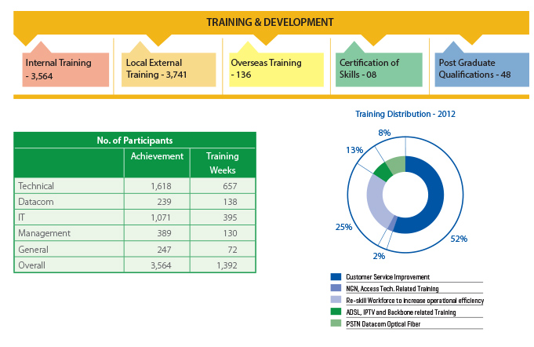
Training & Development
Aligning performance, career development, training and personal development has been a key goal embedded in our core strategy. Training requirements are identified during annual performance evaluations, through the Annual Business Planning process, project formulation stages of special or future projects and through special requests by line managers. An extensive training calendar is planned based on the requirements identified and implemented by the Training & Development division through four dedicated Training Centres located in Moratuwa, Peradeniya, Welisara and Galle. e-Learning is also available for employees in contact centre, sales and front offices on related topics. Additional external training courses are provided for employees who require specialist skills outside the curriculum of the internal training centres. We also provide overseas training for specialised areas identified in the Business Plan. Fees are reimbursed for certification examinations obtained in areas relevant to work and we also encourage post graduate education through special education loans for Masters degrees, Post Graduate Diplomas and qualifications outside the Industrial Certifications scheme. We trained 7,497 employees during the year in total and are delighted that our training targets were surpassed in 2012 with year on year improvements.
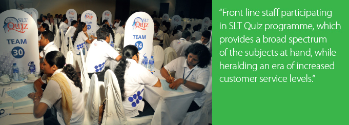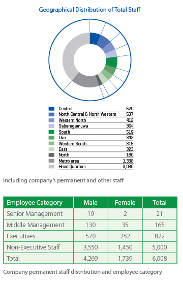
Sri Lanka Telecom provides a wide range of benefits which are both monetary and non-monetary. These include special allowances for a wide variety of reasons, such as partial reimbursements of interest on housing loans and reimbursement of fees for related certification examinations and post graduate qualifications. Maternity leave of 84 working days can be extended with Child Care leave of one year inclusive of holidays on a no pay basis, to encourage women to remain in the workforce at SLT. We also have seven holiday bungalows which can be booked by staff for holidays at concessionary rates. These bungalows are located at Havelock Town, Bandarawela, Namunukula, Anuradhapura, Kandy, Sigiriya and Nuwara Eliya.
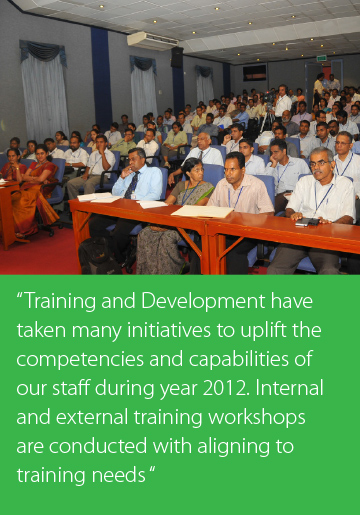
Industrial relations highlights about 33 unions and 12 (1) agreement.
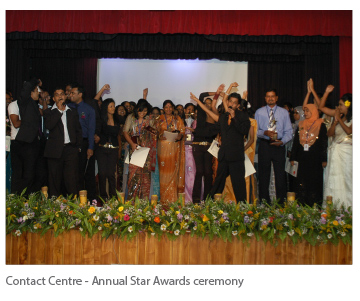SLT management signed an MOU with SLT Unions under the clause 12(1) of the Industrial Dispute Act in the presence of the Labour Commissioner in August 2011 and continued awareness programmes on Collective Agreement and Collective Bargaining for union leaders, arranged for the purpose of signing a collective agreement with them in the year 2012. Awareness programmes on business realities were also conducted for trade union leaders.
Further negotiations are being held with trade union leaders for signing a collective agreement in order to ensure industrial peace within the Company.
For a new trade union to be recognised by the management, a circular was published with information regarding the required percentage of membership representation. Management has been able to comply with the conditions of the 12(1) agreement which was entered into between management and trade unions.
Grievance Handling and Disciplinary ProceduresA formal grievance handling procedure is in place which allows employees to even go to the Chairman / CEO of SLT if he / she is not satisfied with the solutions provided. More emphasis on adhering to this procedure in a more effective manner was addressed during the year 2012.
Health & SafetyAs a responsible corporate citizen, we take a proactive approach to promote the safety and well-being of our employees and others who may be impacted by us. We adhere to a robust Health & Safety regime that is supported by established policy guidelines and best practices.
The health and safety of our employees is given significant attention as they spend a considerable time of their lives in the workplace. Much attention is given to prevention which is our first line of defence and we use a number of platforms to create awareness amongst our employees of health and safety issues and best practices by addressing these.
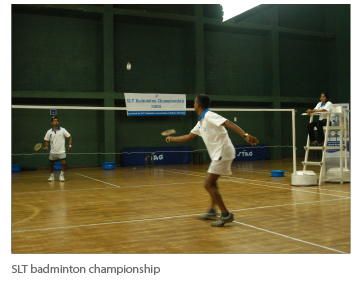
Prevention of issues is our primary goal and we devote much time and effort to ensure that there is coverage of relevant topics for our employees' physical and mental wellbeing. Seminars during 2012 covered topics such as early pregnancy problems, screening for fatal abnormalities & early detection of gynecological cancers, gastritis and bowel disease, diabetes, stroke prevention, personal nutrition management, heart disease prevention and hearing and speech which were conducted by consultants in the relevant specialisations. We also held several programmes on First Aid, Work Life Balance and fire safety during the year.
Our health & safety Newsletters and emails covered ergonomics for computer users, fire safety, first aid, lightning hazards, dengue prevention, precautions during floods, planning for workplace emergencies, precautions for lightning, stroke prevention and preventing water borne diseases.
SLT Safety Week was held from 15th to 19th October to coincide with the National Safety Week to inculcate a safety culture among employees ensuring a healthy workforce that is capable of delivering a high level of customer service. The Health & Safety week commenced with a health awareness programme followed by a poster campaign on general health and safety, a safety quiz conducted through the e-Learning system and two practical safety programmes that were conducted in Batticaloa and Trincomalee. All employees were encouraged to participate in these programmes. Our staff benefits include annual health checks for all employees at identified facilities where we have specific arrangements in place through the Suwatha Programme.
Community
Technology connects people and communities changing the way we interact with each other and impacting our lifestyles. It enables us to leap frog generations of organic growth to an era where there is greater equality in knowledge and ability. By investing in Next Generation Technology we are fulfilling our promise to the community of providing enabling platforms. However, we also look beyond this to ensure that progress in the digital sphere is achieved whilst upholding our cultural values, appreciating our arts and a celebration of human physical achievement through encouragement of sports.
Education
We believe that technology holds the key to social equality through cost effective education and ensure that all students have access to high quality education. Technology also has the ability to transform the way students engage in the process of learning making it more interactive and experiential. Globally education is changing rapidly as more content and examinations are made available online. All three platforms of internet, mobile and television are yet to be exploited to their full potential in this important field and we look to drive the change in Sri Lanka through providing enabling platforms for visionary educators to use in shaping the future of our youth. This is our most significant contribution to supporting education and we take a proactive approach in encouraging educational institutions to be part of the change that is happening globally. At present we support online education through initiatives such as connecting universities (LEARN), connecting schools (SchoolNet) and vocational training institutes, National Online Distance Education Service (NODES) and rural ICT Centres (Nenasala).
The promise:
Healthy work environment.The delivery:
Improved productivity by preventing and controlling all forms of industrial accidents and diseases in order to ensure overall safety and health at SLT.We also sponsor exhibitions that showcase ICT developments as it is vital for our workforce and for aspiring students to understand how technology is transforming the world we live in. Accordingly we sponsored Techno 2012 and the 30th National Information Technology Conference (NITC) organised by the Computer Society of Sri Lanka.
Sri Lanka Telecom has been collaborating with the Asia Foundation to provide high quality text books supporting a broad range of subjects to schools, universities and public libraries for ten years. The objective of this programme is to ensure that students have access to knowledge in an easily accessible form within their local communities to promote learning and English Literacy. All books provided are in English, sourced from the USA and from publishers of repute. This year SLT, together with Asia Foundation donated 122,414 books to 864 libraries in 25 districts in the country. The books ranged from primary education texts to tertiary education texts enabling students to learn in diverse subject areas ranging from Biology to Arts. We are committed to supporting this programme in the future as well and look to cover all districts in the coming year.
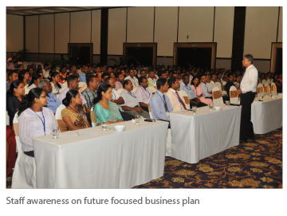
Professionalism
SLT sponsors conferences of professional bodies to promote greater sharing of knowledge and highlight how technology enhances the capability of a professional. Such conferences ensure that professionals in Sri Lanka are globally relevant and provide a forum to debate and discuss current topics providing useful insights into possible solutions, their pros and cons. We also sponsor awards and competitions to promote specific areas of excellence within the profession.
Empowering National Enterprise Deyata Kirula 2012Our support to the national agenda of developing all areas of the country is demonstrated through our partnership of the Deyata Kirula exhibition, focusing on empowering rural communities to develop and contribute to the macro economy. Sri Lanka Telecom continues to be an integral partner of Deyata Kirula, with the goal to empower the community through ICT enablement, as evidenced through our investment in improving telecommunication infrastructure in the Moneragala district and Anuradhapura district in year 2011 and 2012 respectively. Currently, SLT's development plans are being implemented in the Ampara district which will host Deyata Kirula in 2013.

Heritage
Sri Lanka has a proud heritage that has been enriched with feats of engineering, healing, visual and performing arts which have enriched our lives through generations. Our country is also home to one of the top 25 bio diversity hotspots with many endemic species of flora and fauna. Sri Lankan culture, as with most ancient cultures, has a marked respect for nature's bounty and progress made in science complemented nature in recognition of the need to preserve our fragile eco systems. Art forms thrived on natural themes reflecting appreciation of the surroundings and the co-existence of the people through song, dance, carvings and paintings. Our traditions and rituals also reflect the respect for the balance of nature. Generations of healers, artists and craftsmen have had their craft passed down to them through their ancestors and communities which are unique to Sri Lanka.
Heritage Themed Complimentary itemsIn recognition of the need to preserve our rich heritage, Sri Lanka Telecom embarked on a project in 2001 to produce our calendars and complimentary items on themes from our heritage including arts, culture and bio-diversity. The primary objective of this is to raise awareness amongst the general public on the importance of preserving our rich heritage for future generations. Past themes have included Endemic birds of Sri Lanka [2003], Endemic orchids of Sri Lanka [2005] Kolam masks of Sri Lanka [2006], Endemic fresh water fish of Sri Lanka [2007] Gok Art of Sri Lanka [2008], Endemic butterflies of Sri Lanka [2009], The Heritage of Sinharaja [2010], Rediscovering hidden heritage [2011] and Drums of Sri Lanka [2012].
Our calendar for 2013 focuses on the Rush and Reed Craft of Sri Lanka which is an ancient art that has been developed over thousands of years. The intricate patterns woven into utility items such as mats, baskets and wallets etc. are inspired by nature and require careful planning using mathematics and geometry. The artist's skill is reflected in the colourful items that are made from natural materials such as gal aha, thulhiriya, palm leaves and pandanus that are coloured using mostly pigments extracted from plants and trees. It is important to preserve this industry due to its impact on the economy, environment as well as culture or traditions. For example, some varieties of rush have the ability to purify the soil by their ability to remove harmful chemicals from it. Furthermore, the industry provides an economic reason for continued growth of these important links in our eco systems and a craft that reflects our culture to enrich the growing tourism industry.
Jana Gee Tharuwa Wee competitionDuring the Sinhala and Tamil New Year season, a competition was launched to celebrate Sri Lankan Folk Songs (Jana Gee) which combined the heartsongs of our people handed down over generations with SLT Interactive Voice Recognition services. The competition was open to anyone who could call in using SLT Megaline or an SLT Citylink telephone to submit the folksong which could be in Sinhala or Tamil. We received 44, 000 folk song submissions from contestants who were mainly students. This was encouraging as it demonstrated that they too were interested in engaging in the preservation of our culture. Winners were selected by an eminent panel of judges at a grand finale held at BMICH and were awarded generous cash prizes.
Our technical skills were used to develop e-directories and the Ministry's official website as part of our project to promote indigenous medicine and Ayurveda.
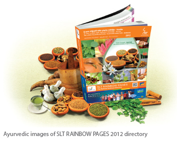SLT RAINBOW PAGES has been in the forefront of providing timely and accurate information to the nation as the only business directory now circulating in Sri Lanka.

As a socially responsible entity, SLT RAINBOW PAGES annually selects a local industry which has a national interest to be promoted in order to increase its value among general public as well as the stakeholders in the industry. In the year 2012, we selected indigenous medicine as the industry to be made popular during the year. As such, all our resources were used to promote this industry during the year 2012.
Accordingly the SLT RAINBOW PAGES 2012 directory cover consisted of Ayurvedic images as part of our strategy to communicate the message to general public. To stimulate the indigenous medicine usage, there were several articles about herbal plants, Ayurvedic treatments, Ayurvedic simple remedies etc.
Apart from the print directory, our other simultaneous products such as CD, e- directory, website etc., also carried important information on indigenous medicine and Ayurveda to the local as well as the global market.
To promote the industry we worked together with the Ministry of Indigenous Medicine and other groups and organisations related to this industry. Our technical skills were used to develop e-directories and the Ministry's official website as part of our project to promote indigenous medicine and Ayurveda. By supporting such a socially and nationally valuable industry, the demand, value and popularity of the directories began to increase.
The theme for the year 2013 is the vibrant Gem & Jewellery Industry of Sri Lanka.
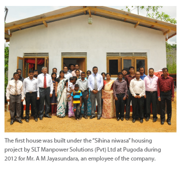Arts and Culture are important aspects of society as they enrich the lives of people and provide a medium for expression and communication without language barriers. It is important to ensure that Sri Lankan arts and culture is appreciated by present generations, preserved and also progressed to ensure relevance in modern society. It is equally important to ensure that we explore other cultures and appreciate their arts as we integrate to become citizens of the world.
Sports
The importance of sports in promoting peace and harmony is one that has been used by great leaders of our time and throughout history. This important aspect has the ability to unite people under one banner cutting through social and economic inequality. We contribute to this vision by uplifting and encouraging local sporting talent and athletes through the sponsorship of sporting events, bodies and sports men / women and contingents.
Other
We have carried out a number of community projects which have fulfilled specific needs in the community we operate in and some of these are listed below. The majority of these projects were initiated by our employees who volunteered their time and efforts to achieve a successful outcome.
- Bi-annual blood donation programmes - SLT conducts blood donation programmes twice a year, with the help of the Blood Bank. Many employees have even donated blood more than 20 times during their service at SLT.
- Hope for less fortunate children – Employees of SLT volunteered of their time to visit several orphanages and schools in order to build relationships with the children to help meet their psychological and emotional needs and to instill in their hearts the assurance that they are valued, respected and loved.These programmes involved spending time with the children over refreshments, presenting them small gifts, distributing books in collaboration with Asia Foundation as well as other entertainment programmes. These programmes were all funded by the employees of SLT.
- Relief in times of natural disasters – SLT is prompt to respond in times of natural disasters and also encourages employees to actively contribute to relief efforts. During the heavy flooding experienced during the latter part of 2012, SLT and its employees came together to provide relief to affected victims by way of contributions such as cash donations and dry rations.
Environmental Dimension
Our products enable people and businesses all over the world to reduce local and international travel everyday whilst remaining connected to loved ones or opportunity, thus enabling reduction of the carbon footprint of all mankind. This is the telecom industry's greatest contribution to the environment although it is difficult to measure. We are also mindful of the necessarily large footprint the organisation makes in providing enabling technologies and strive to manage and minimise it as part of our business processes as there are substantial benefits to be gained as a result of lean consumption and waste management. Inculcating the concepts of sustainability in this manner ensures that there is continuity of measures taken to identify, monitor and manage the key issues as part of the business objectives of the Company, an imperative for continued action on sustainability. Employees are engaged in these initiatives by educating field staff on minimising environment pollution and damages including minimising the cutting down of trees and finding alternative ways of carrying out daily activities such as cabling etc. without harming the existing geographic landscapes. Educating employees on environment pollution and its threat to life as well as educating and encouraging ways of minimising wastage through SLT's bi-monthly magazine Amathuma, emails, posters and seminars is an ongoing programme. As a responsible corporate citizen we are aware that there is more that needs to be done and are inspired to push the boundaries by our achievements so far.
Energy Management
Energy management is a strategic imperative as there is tremendous potential for savings in this vital area. It is the focus of a separate division who are mandated to ensure that SLT manages energy in a responsible way to meet its strategic needs. SLT also endeavours to make technological changes to protect the environment and reduce energy use by adapting to new technologies such as Next Generation Networks (NGN) and also low power consumption technology such as Passive Optical networks (PON) and also minimising damages on environment. The most significant initiatives implemented during the year are discussed below.
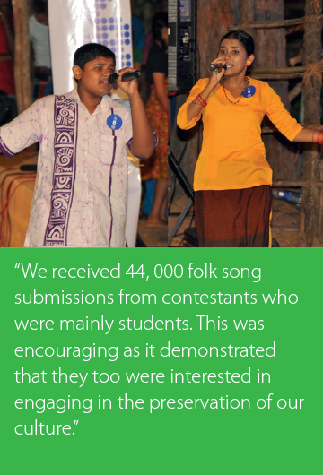
We have completed the migration of all international circuits from three legacy TDM international gateways into fully softswitch architecture featuring two modern switches. This leads to high levels of redundancy, improved performance and monitoring and tremendous savings on energy as estimated below. The savings were estimated by computing per subscriber monthly energy consumption from sample measurements on CDMA BTS, legacy & NGN exchanges and using these to calculate weighted average monthly consumption for CDMA, legacy and NGN Systems. A fixed ratio of 29% NGN and 69% Legacy subscribers (the current status of the project) was used for the computations indicated in green.
Maximum utilisationA new fuel management system was introduced in the first half of the year which reduced fuel consumption by 126.6 oil barrels during the year.
Minimum impactA new policy on Deployment of Power Plants at SLT was introduced in order to establish a clear policy on deploying and managing all power plants within SLT. The aim of this is to save energy costs and to help reduce damage to environment from unnecessary energy usage and leverage the benefits from
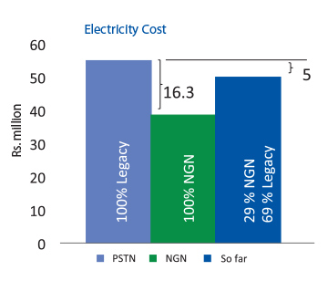
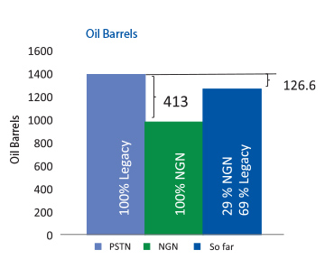
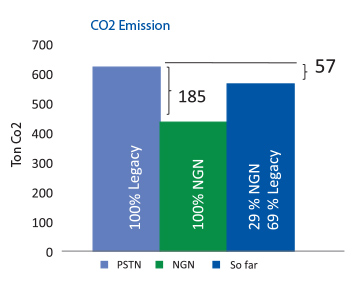
the NGN migration associated with the i-Sri Lanka programme. Highlights of the initiatives are:
- The standard minimum temperature maintained
- Replace all conventional type rectifiers currently in use before end 2013. All new installations should be energy efficient type, and able to be controlled, monitored and supervised remotely.
- Other projects for saving energy include a proposal for natural lighting at the Peliyagoda stores complex, replacing of CRT monitors with LCD monitors and improving lighting efficiency through use of LEDs, T5 retrofit tubes and occupancy sensors which are expected to save approximately Rs.5.7 million annually.
Waste Management
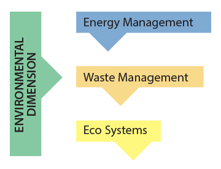We work with the Central Environmental Authority, Local Government Authorities, Wildlife Department, Forest Department and the Geological Department to ensure compliance with regulations as we expand our network islandwide. A team of staff are appointed to overlook the environment management of the Company which includes the proper usage of resources etc. The following actions are also taken to ensure that we minimise our impact on the environment:
We use only approved refrigerants for air conditioners and ECO tests is followed for air emissions. Additionally, SLT workshop uses AC gas recovery system made by employees to reduce air emissions by vehicle air conditioners.
We minimise liquid effluents used in new projects and during maintenance activities. A water treatment plant has been implemented at the SLT Vehicle Service Station for which CEA approval has also been obtained. Maintenance free batteries are used in new projects and replacements (SMF batteries), and Ph value is balanced before disposing of battery acids. We also retreat exhaust from the vehicle servicing plant at Peliyagoda.
SLT does not use high power broadcasting transmitters in our towers and use sound proof generators to minimise sound pollution. We have implemented a programme of converting existing machines to become sound proof and a policy to purchase only sound proof machines in the future. Employee awareness in microwave operations and maintenance has been increased through awareness programmes. We also provide e-waste bins at SLT Teleshops to enable customers to dispose of electronic items in a green manner.
 Solid waste
Solid waste
Equipment vendors and suppliers are strictly advised to recover solid waste and follow proposed dismantling procedures at the end of projects - packaging, polythene, safety cushions etc. Solid waste is categorised and issued for recycling:
- Paper – given to the paper corporation
- Furniture – given to manufacturers and users if reusable
- Metallic waste – given over for recycling purposes
- Solid waste –Toner cartridge collecting bins organised and distributed to all island wide SLT offices.
- Creating awareness among customers, and business partners - SLT has incorporated the following practices in to its operations to encourage compliance with the Company's environmental policy.
- Suppliers - The e-tendering process encourages suppliers to comply with SLT's organisation policy
- Customers - Online bill payments reduce the printing of receipts and thus reduces paper wastages. Time and fuel wasted in travelling to a payment location is also reduced. SLT encourages customers to make payments using the online bill payment facility.
- The introduction of the Conference Call facility encourages customers to avoid wasting excessive amounts of time / fuel etc. in travelling to hold meetings and discussions and contributes indirectly to the environment.
e-Waste Management
e-Waste collecting bins have been placed in all the SLT premises to collect all the electronic wastes such as; telephone instruments, mobile phones, batteries, etc. in partnership with the Central Environment Authority.
Eco Systems
Preservation of eco systems is vital to the future of the planet and we aim to highlight this important fact through our corporate complimentary items, calendars and other gifts.
As dengue has claimed many lives in epidemics that are preventable, we held Shramadhana (volunteer) campaigns to prevent the breeding of dengue mosquitos through cleaner environments. This was carried out in June and July 2012 under the instructions of the Medical Officers of Health. Different sections were assigned different areas of the premises to inspect and clean during the allotted time to ensure the working environment is free from dengue mosquitos.
The promise:
To make the planet a better place.The delivery:
Our products enable people and businesses all over the world to reduce local and international travel everyday whilst remaining connected to loved ones or opportunity, thus enabling reduction of the carbon footprint of all mankind.GRI INDEX
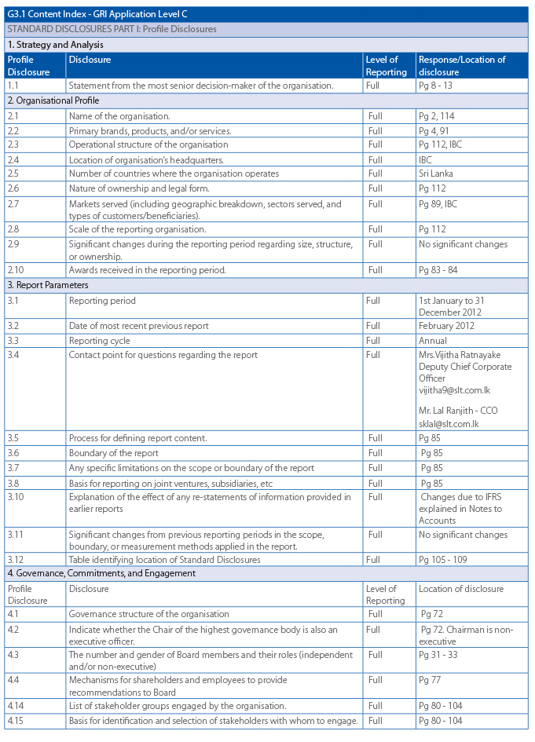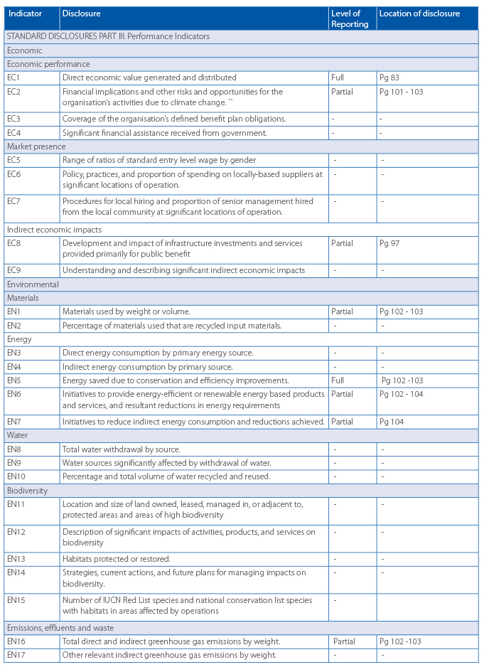
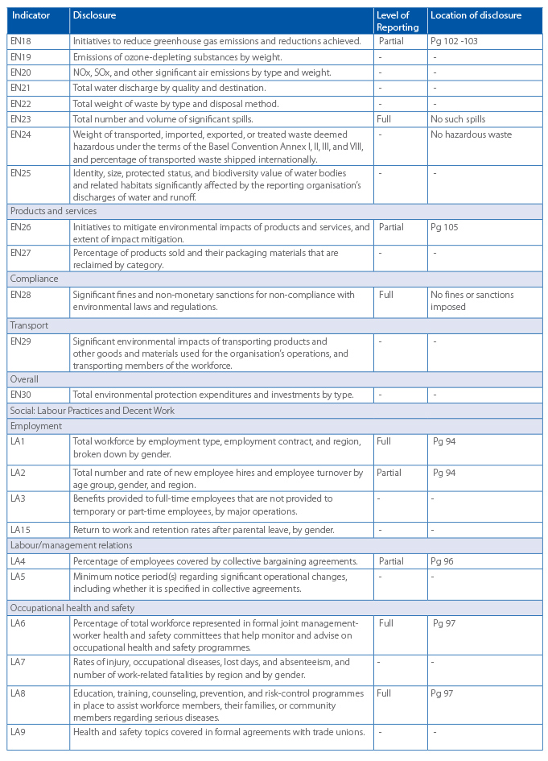
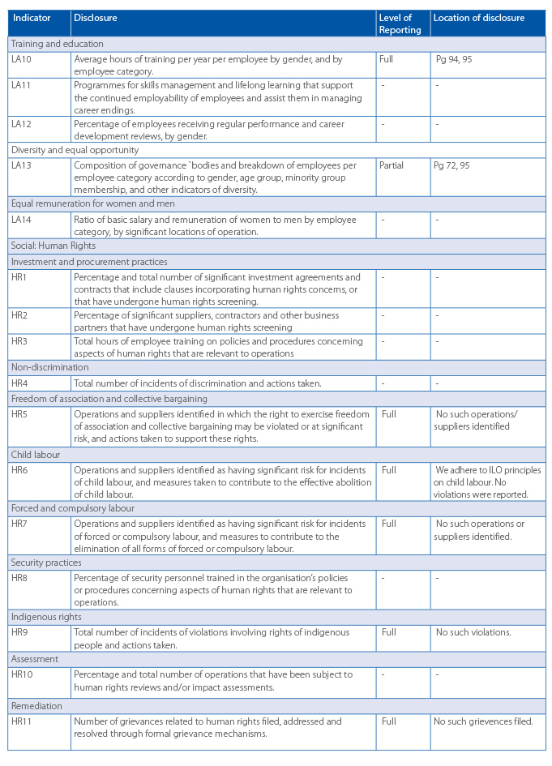
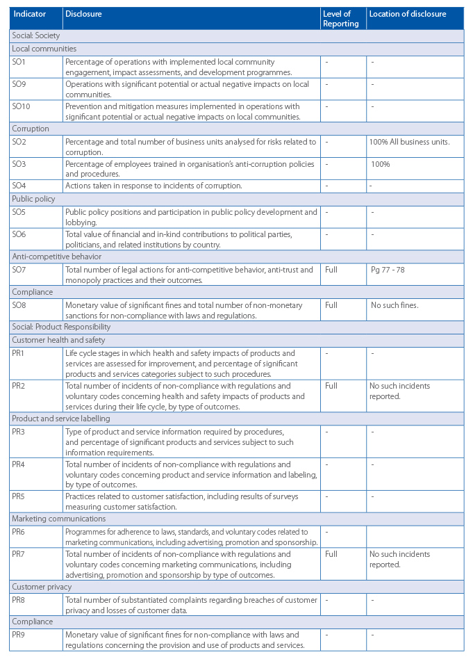